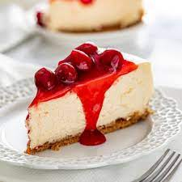

CHEESECAKE

Description
Want something sweet, savory and simple to make. This cheesecake
encompasses all those traits, with only containing 5 ingredients.
Make and serve in less than 45 minutes, and have a delicious, fast
and savory dessert for you and the whole family.
Ingredients
- 1 Graham Cracker Pie Crust
- 21 oz cherry pie filling
- 16 oz cream cheese
- 2 eggs
- 1/2 cup condensed milk
Directions
- Preheat the oven to 350°F.
- Beat the cream cheese at room temperature until
creamy (1 minute.) Beat in the condensed milk then
the eggs until combined.
- Pour batter into a pre-made pie crust and bake for
25 minutes. Cool before topping with canned cherry
pie filling. Keep refrigerated.
NOTES:
- Homemade Pie Crust: Combine 9 crushed graham crackers
(one sleeve) with 5 Tbsp of melted butter and press into
a pie pan.
- Mini Cheesecakes- Line a muffin pan with cupcake liners.
Place 1 tbsp of graham cracker crust (can crumble
store-bought if needed) into each liner and press down.
Pour 1/4 cup of prepared cheesecake batter into each
liner. Bake 15-20 minutes at 350°F.